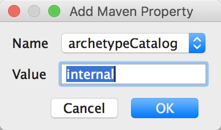

想学习Maven吗？
常用的构建命令
mvn
- v 查看版本
- compile 编译
- test 测试
- package 打包
- 会依次执行 clean 、
- clean 删除target文件夹
- Install 安装jar包到本地仓库中
自动创建目录骨架
创建目录的两种方式：
- mvn archetype:generate 按照提示进行选择
mvn archetype:generate -DgroupId=组织名，公司网址的反写+项目名
-DartifactId=项目名-模块名
-Dversion=版本号
-Dpackage=代码所在的包名
src/main/java:存放java源文件
src/main/resources:存放项目配置文件，如spring.xml,hibernate.cfg.xml。。。
src/test/java:存放test的java文件
src/test/resources:存放test时候所需的配置文件
maven中的坐标和仓库
坐标
在<dependency>中的就是坐标
<dependency>
<groupId>com.nimon.maven01</groupId>
<artifactId>maven01-model</artifactId>
<version>0.0.1SNAPSHOT</version>
</dependency>
项目的包名，建议和groupId和artifactId相吻合，这样看起来，就更加清晰，符合逻辑，也更方便搜索。
构件
在maven世界中，任何一个依赖、插件、项目构建的输出，都可以被称作为构件。
构件通过坐标作为其唯一的标识，就好像我们的工作单位和家庭地址。
收宝贝的时候，不是收到的那一刻，而是中间等待的过程。
仓库
本地仓库和远程仓库
查看仓库
全球中央仓库
镜像仓库
一旦配置了镜像，那么所有访问都会到镜像仓库中，原仓库将不能直接访问。
maven主目录 > conf > settings.xml > 146行
<mirror>
<id>maven.net.cn</id>
<mirrorOf>central</mirrorOf>
<name>Central mirror in china</name>
<url>http://maven.net.cn/content/groups/public</url>
</mirror>
更改仓库位置
maven从远程中央仓库下载默认是存放在当前用户目录中
即 ~/.m2/repository
修改 settings.xml文件，复制第 53 行的内容
<localRepository>/Users/nimon/nj/proj/maven/repo</localRepository>
其中路径表示新仓库的位置。然后复制一份 settings.xml 到 repo 目录下，这样我们以后更新maven版本就不用再修改原始的 settings.xml
maven的生命周期和插件
完整的项目构建过程包括
清理、编译、测试、打包、集成测试、验证、部署
maven将其进行抽象。实际上，maven和插件是密不可分的，maven抽象出一套项目构建的生命周期，而插件是对maven抽象的具体实现。
比如，我们对项目进行编译，
maven中定义了三套独立的生命周期
- clean 清理项目
- default 构建项目
- site 生成项目站点
这三套生命周期是相互独立的，每个生命周期又包含一些阶段，这些阶段是有顺序的，后面的阶段依赖于前面的阶段。在执行的时候，前面的阶段会顺序执行，并不会触发另外两个生命周期中的阶段。
clean 清理项目阶段
pre-clean 执行清理前的工作
clean 清理上一次构建的文件
post-clean 执行清理后的文件
default 构建项目（最核心）
compile test package install
site 生成项目站点
pre-site 在生成项目站点前要完成工作
site 生成项目的站点文档
post-site 在生成项目站点后要完成的工作
site-deploy 发布生成的站点到服务器
可以去 官方插件 ，查找使用插件
pom.xml常用元素
pom.xml是maven项目的核心管理文件，用于项目描述、组织管理、依赖管理和构建信息的管理。
<project xmlns="http://maven.apache.org/POM/4.0.0"
xmlns:xsi="http://www.w3.org/2001/XMLSchema-instance"
xsi:schemaLocation="http://maven.apache.org/POM/4.0.0 http://maven.apache.org/maven-v4_0_0.xsd">
<modelVersion>4.0.0</modelVersion>
<groupId>组织名，公司网址的反写+项目名</groupId>
<artifactId>项目名-模块名</artifactId>
<!--打包类型，默认是jar
war zip pom
-->
<packaging>war</packaging>
<!--第一个0表示大版本号
第二个0 表示分支版本号
第三个0 表示小版本号
SNAPSHOT ：不稳定，尚处于开发中，快照版本
ALPHA ：是内部测试版,一般不向外部发布,会有很多Bug.一般只有测试人员使用。
Beta：也是测试版，这个阶段的版本会一直加入新的功能。在Alpha版之后推出。
RELEASE ：稳定版
GA ：正式发布
-->
<version>0.0.1-SNAPSHOT</version>
<!--项目描述名-->
<name>maven05-demo Maven Webapp</name>
<!--项目地址-->
<url>http://maven.apache.org</url>
<!--项目描述-->
<description></description>
<developers></developers>
<licenses></licenses>
<organization></organization>
<dependencies>
<dependency>
<groupId>junit</groupId>
<artifactId>junit</artifactId>
<version>4.10</version>
<!--只存在于测试的 classpath 中-->
<scope>test</scope>
<type></type>
<!--设置依赖是否可选-->
<optional></optional>
<!--排除依赖传递列表-->
<exclusions>
<exclusion>
</exclusion>
</exclusions>
</dependency>
</dependencies>
<!--依赖的管理，不会被运行和引入到实际的依赖中-->
<dependencyManagerment>
<!--主要定义在父模块中，供子模块集成用的-->
<dependency>
</dependency>
</dependencyManagerment>
<!--插件列表-->
<build>
<plugins>
<plugin>
<groupId>org.apache.maven.plugins</groupId>
<artifactId>maven-source-plugin</artifactId>
<version>2.4</version>
<!--上面三项是坐标-->
<executions>
<execution>
<phase>package</phase>
<goals>
<goal>jar-no-fork</goal>
</goals>
</execution>
</executions>
</plugin>
<plugin>
<groupId>org.apache.maven.plugins</groupId>
<artifactId>maven-jar-plugin</artifactId>
<version>3.0.2</version>
</plugin>
</plugins>
<!--子模块对父模块的继承-->
<parent></parent>
<!--聚合多个maven运行项-->
<modules></modules>
<finalName>maven05-demo</finalName>
</build>
</project>
依赖范围
我们平时在开发时，如果要使用某一个框架，就需要把框架的jar包引入项目的 classpath 中，这样我们的项目就可以使用 框架为我们封装好的一些方法。maven给我们提供了三种classpath：
- 编译
- 测试 test
- 运行
所以依赖的范围就是控制依赖于三种 classpath 的关系的。
有六中依赖范围的值可以选择：
- compile 默认的范围，如果没有明确指定，编译依赖将在所有的 classpath 中都有效，而且会传递到依赖项目中。
- provided 在编译和测试的时候有效
- runtime 在测试和运行时有效
- test 只在测试的时候有效
- system 于本机系统相关联，可移植性差
- import 导入的范围，它只使用在 dependencyManagerment ，表示从其他 pom 中导入的 dependency 的配置。
例如
<project>
<modelVersion>4.0.0</modelVersion>
<groupId>maven</groupId>
<artifactId>B</artifactId>
<packaging>pom</packaging>
<name>B</name>
<version>1.0</version>
<dependencyManagement>
<dependencies>
<dependency>
<groupId>maven</groupId>
<artifactId>A</artifactId>
<version>1.0</version>
<type>pom</type>
<scope>import</scope>
</dependency>
.....
依赖传递
一个小案例
shanji 依赖于 nage
nage 依赖于 bge
bge的依赖关系
<dependencies>
<dependency>
<groupId>junit</groupId>
<artifactId>junit</artifactId>
<version>4.10</version>
<scope>test</scope>
</dependency>
</dependencies>
nage的依赖关系
<dependencies>
<dependency>
<groupId>junit</groupId>
<artifactId>junit</artifactId>
<version>3.8.1</version>
<scope>test</scope>
</dependency>
<dependency>
<groupId>com.hongxing</groupId>
<artifactId>hongxing-bge</artifactId>
<version>1.0-SNAPSHOT</version>
</dependency>
</dependencies>
shanji的依赖关系
<dependencies>
<dependency>
<groupId>junit</groupId>
<artifactId>junit</artifactId>
<version>3.8.1</version>
<scope>test</scope>
</dependency>
<dependency>
<groupId>com.hongxing</groupId>
<artifactId>hongxing-nage</artifactId>
<version>1.0-SNAPSHOT</version>
<exclusions>
<exclusion>
<groupId>com.hongxing</groupId>
<artifactId>hongxing-bge</artifactId>
</exclusion>
</exclusions>
</dependency>
</dependencies>
这时候nage下就有bge的依赖jar包，shanji下有bge和nage的依赖jar包。
但是由于依赖的传递性，shanji 只依赖于nage ，shanji 项目中会出现 bge 的jar包。有时候，这不是我们想要的。
这时可以在 nage 依赖下使用
依赖冲突
eg 对不同版本的同一个构建。
短路优先
A -> B -> C -> X（JAR)
A -> D -> X（JAR) 优先
举例：
在 bge 中添加commons-io 2.5的版本依赖
在 nage 中添加commons-io 2.0的版本依赖
这时候在 shanji 项目中就会出现 2.0 的版本，因为shanji 离 nage 比较近。
- 先声明先优先
如果路径长度相同，谁先声明，先解析谁。
举例：
<dependencies>
<dependency>
<groupId>junit</groupId>
<artifactId>junit</artifactId>
<version>3.8.1</version>
<scope>test</scope>
</dependency>
<dependency>
<groupId>com.hongxing</groupId>
<artifactId>hongxing-bge</artifactId>
<version>1.0-SNAPSHOT</version>
</dependency>
<dependency>
<groupId>com.hongxing</groupId>
<artifactId>hongxing-nage</artifactId>
<version>1.0-SNAPSHOT</version>
<!--<exclusions>-->
<!--<exclusion>-->
<!--<groupId>com.hongxing</groupId>-->
<!--<artifactId>hongxing-bge</artifactId>-->
<!--</exclusion>-->
<!--</exclusions>-->
</dependency>
</dependencies>
这时候，项目中 commons-io 的版本就变成了 2.5，因为是先声明 bge ，后声明 nage 。
聚合和继承
如果在maven中有多个项目，我们想要 install 将其放到本地仓库中， 必须对其依次执行 install 命令
maven 给我提供了一个解决办法，就是使用 聚合
<modules>
<module>../hongxing-bge</module>
<module>../hongxing-nage</module>
<module>../hongxing-shanji</module>
</modules>
然后执行 install 命令，就会自动把三个module都安装到本地仓库中了。
定义父容器
<properties>
<project.build.sourceEncoding>UTF-8</project.build.sourceEncoding>
<junit.version>
3.8.1
</junit.version>
</properties>
<dependencyManagement>
<dependencies>
<dependency>
<groupId>junit</groupId>
<artifactId>junit</artifactId>
<version>${junit.version}</version>
</dependency>
</dependencies>
</dependencyManagement>
然后在子类中使用
<parent>
<groupId>com.hongxing</groupId>
<artifactId>hongxing-parent</artifactId>
<version>1.0-SNAPSHOT</version>
</parent>
注意修改
为pom
使用maven构建web项目
Next，这里在Properties中添加一个参数archetypeCatalog=internal，不加这个参数，在maven生成骨架的时候将会非常慢，有时候会直接卡住。
来自网上的解释：
archetypeCatalog表示插件使用的archetype元数据，不加这个参数时默认为remote，local，即中央仓库archetype元数据，由于中央仓库的archetype太多了，所以导致很慢，指定internal来表示仅使用内部元数据。

使用 jetty 发布
<plugin>
<groupId>org.eclipse.jetty</groupId>
<artifactId>jetty-maven-plugin</artifactId>
<version>9.4.4.v20170414</version>
<executions>
<execution>
<!--在打包成功后使用jetty:run来运行jetty服务-->
<phase>package</phase> <!--指定在package阶段的时候-->
<goals>
<goal>run</goal>
</goals>
</execution>
</executions>
</plugin>